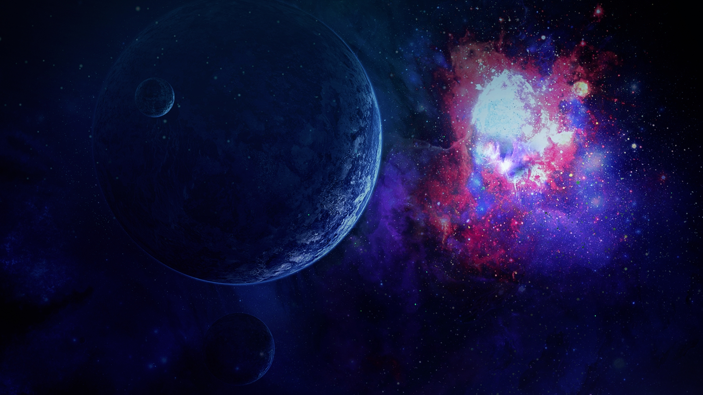
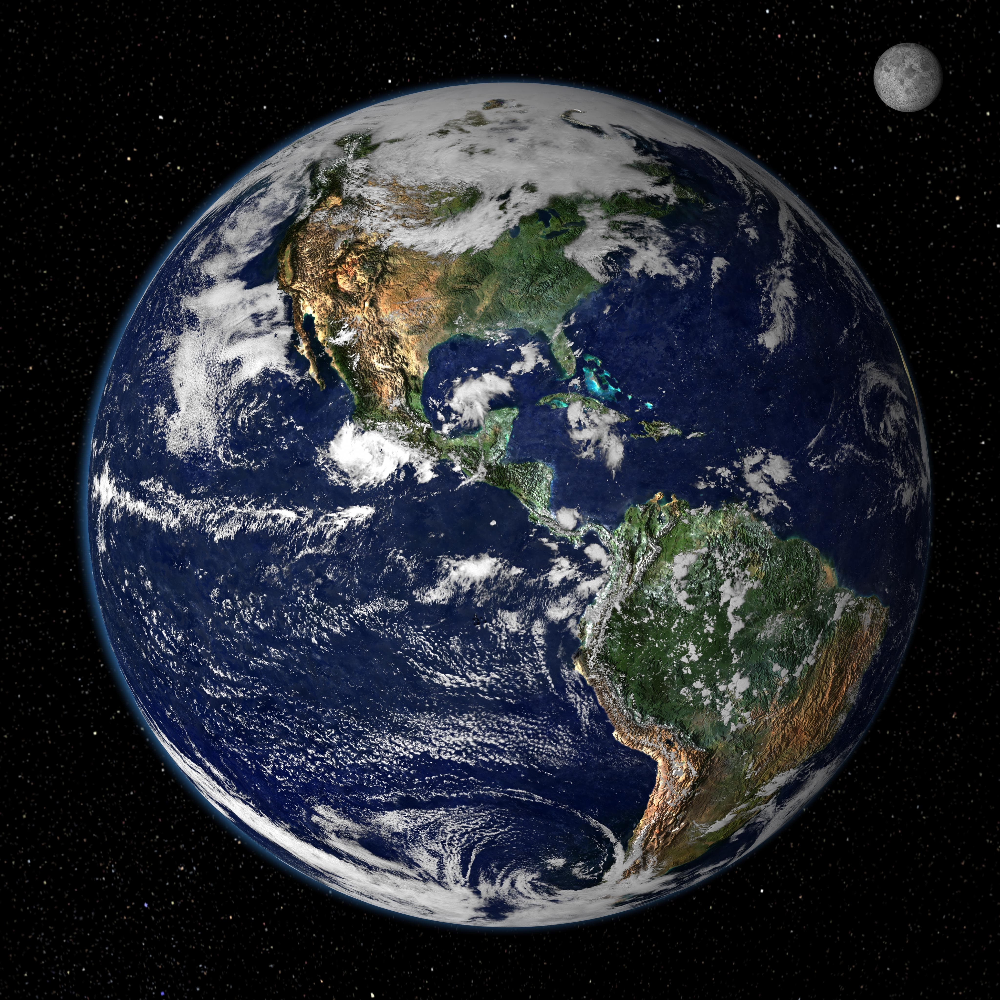

Земля
Земля — третья по удалённости от Солнца планета Солнечной системы. Самая плотная, пятая по диаметру и массе среди всех планет и крупнейшая среди планет земной группы, в которую входят также Меркурий, Венера и Марс. Единственное известное человеку на данный момент тело Солнечной системы в частности и Вселенной вообще, населённое живыми организмами.
История Земли
Современной научной гипотезой формирования Земли и других планет Солнечной системы является гипотеза солнечной туманности, по которой Солнечная система образовалась из большого облака межзвёздной пыли и газа. Облако состояло главным образом из водорода и гелия, которые образовались после Большого взрыва, и более тяжёлых элементов, оставленных взрывами сверхновых. Примерно 4,5 млрд лет назад облако стало сжиматься, что, вероятно, произошло из-за воздействия ударной волны от вспыхнувшей на расстоянии нескольких световых лет сверхновой. Когда облако начало сокращаться, его угловой момент, гравитация и инерция сплюснули его в протопланетный диск перпендикулярно к его оси вращения. После этого обломки в протопланетном диске под действием силы притяжения стали сталкиваться, и, сливаясь, образовывали первые планетоид.
В процессе аккреции планетоиды, пыль, газ и обломки, оставшиеся после формирования Солнечной системы, стали сливаться во всё более крупные объекты, формируя планеты. Примерная дата образования Земли — 4,54±0,04 млрд лет назад. Весь процесс формирования планеты занял примерно 10—20 миллионов лет.
Луна сформировалась позднее, примерно 4,527±0,01 млрд лет назад, хотя её происхождение до сих пор точно не установлено. Основная гипотеза гласит, что она образовалась путём аккреции из вещества, оставшегося после касательного столкновения Земли с объектом, по размерам близким Марсу и массой 10—12 % от земной (иногда этот объект называют «Тейя»). При этом столкновении было высвобождено примерно в 100 млн раз больше энергии, чем в результате того, которое, предположительно, вызвало вымирание динозавров. Этого было достаточно для испарения внешних слоёв Земли и расплавления обоих тел. Часть мантии была выброшена на орбиту Земли, что предсказывает, почему Луна обделена металлическим материалом, и объясняет её необычный состав. Под влиянием собственной силы тяжести выброшенный материал принял сферическую форму и образовалась Луна.
Протоземля увеличилась за счёт аккреции, и была достаточно раскалена, чтобы расплавлять металлы и минералы. Железо, а также геохимически сродственные ему сидерофильные элементы, обладая более высокой плотностью, чем силикаты и алюмосиликаты, опускались к центру Земли. Это привело к разделению внутренних слоёв Земли на мантию и металлическое ядро спустя всего 10 миллионов лет после того, как Земля начала формироваться, произведя слоистую структуру Земли и сформировав магнитное поле Земли. Выделение газов из коры и вулканическая активность привели к образованию первичной атмосферы. Конденсация водяного пара, усиленная льдом, занесённым кометами и астероидами, привела к образованию океанов, Земная атмосфера тогда состояла из лёгких атмофильных элементов: водорода и гелия, но содержала значительно больше углекислого газа, чем сейчас, а это уберегло океаны от замерзания, поскольку светимость Солнца тогда не превышала 70 % от нынешнего уровня. Примерно 3,5 миллиарда лет назад образовалось магнитное поле Земли, которое предотвратило опустошение атмосферы солнечным ветром.
Поверхность планеты постоянно изменялась в течение сотен миллионов лет: континенты появлялись и разрушались, перемещались по поверхности, периодически то собираясь в суперконтинент, то расходясь на изолированные материки. Так, около 750 млн лет назад раскололась единая Родиния, затем её части объединились в Паннотию (600—540 млн лет назад), а затем в последний из суперконтинентов — Пангею, который распался 180 миллионов лет назад.
Строение Земли
Земля относится к планетам земной группы, и в отличие от газовых гигантов, таких как Юпитер, имеет твёрдую поверхность. Это крупнейшая из четырёх планет земной группы в Солнечной системе, как по размеру, так и по массе. Кроме того, Земля среди этих четырёх планет имеет наибольшие плотность, поверхностную гравитацию и магнитное поле. Это единственная известная планета с активной тектоникой плит.
Недра Земли делятся на слои по химическим и физическим (реологическим) свойствам, но в отличие от других планет земной группы, Земля имеет ярко выраженное внешнее и внутреннее ядро. Наружный слой Земли представляет собой твёрдую оболочку, состоящую главным образом из силикатов. От мантии она отделена границей с резким увеличением скоростей продольных сейсмических волн — поверхностью Мохоровичича. Твёрдая кора и вязкая верхняя часть мантии составляют литосферу. Под литосферой находится астеносфера, слой относительно низкой вязкости, твёрдости и прочности в верхней мантии.
Значительные изменения кристаллической структуры мантии происходят на глубине 410—660 км ниже поверхности, охватывающей (переходную зону), которая отделяет верхнюю и нижнюю мантию. Под мантией находится жидкий слой, состоящий из расплавленного железа с примесями никеля, серы и кремния — ядро Земли. Сейсмические измерения показывают, что оно состоит из двух частей: твёрдого внутреннего ядра (радиус ~1220 км) и жидкого внешнего ядра (радиус ~ 2250 км).
Магнитное поле Земли
Магнитное поле Земли в первом приближении представляет собой диполь, полюсы которого расположены рядом с географическими полюсами планеты. Поле формирует магнитосферу, которая отклоняет частицы солнечного ветра. Они накапливаются в радиационных поясах — двух концентрических областях в форме тора вокруг Земли. Около магнитных полюсов эти частицы могут «высыпаться» в атмосферу и приводить к появлению полярных сияний. На экваторе магнитное поле Земли имеет индукцию 3,05⋅10-5 Тл и магнитный момент 7,91⋅1015 Тл·м3.
Согласно теории «магнитного динамо», поле генерируется в центральной области Земли, где тепло создаёт протекание электрического тока в жидком металлическом ядре. Это, в свою очередь, приводит к возникновению у Земли магнитного поля. Конвекционные движения в ядре являются хаотичными; магнитные полюсы дрейфуют и периодически меняют свою полярность. Это вызывает инверсии магнитного поля Земли, которые возникают в среднем несколько раз за каждые несколько миллионов лет. Последняя инверсия произошла приблизительно 700 000 лет назад.
Магнитосфера — область пространства вокруг Земли, которая образуется, когда поток заряженных частиц солнечного ветра отклоняется от своей первоначальной траектории под воздействием магнитного поля. На стороне, обращённой к Солнцу, толщина её головной ударной волны составляет около 17 км и расположена она на расстоянии около 90 000 км от Земли. На ночной стороне планеты магнитосфера вытягивается, приобретая длинную цилиндрическую форму.
Когда заряженные частицы высокой энергии сталкиваются с магнитосферой Земли, то появляются радиационные пояса (пояса Ван Аллена). Полярные сияния возникают, когда солнечная плазма достигает атмосферы Земли в районе магнитных полюсов.
Орбита и вращение Земли
Земле требуется в среднем 23 часа 56 минут и 4,091 секунд (звёздные сутки), чтобы совершить один оборот вокруг своей оси. Скорость вращения планеты с запада на восток составляет примерно 15° в час (1° в 4 минуты, 15' в минуту). Это эквивалентно угловому диаметру Солнца или Луны, около 0,5°, каждые 2 минуты (видимые размеры Солнца и Луны примерно одинаковы).
Вращение Земли нестабильно: скорость её вращения относительно небесной сферы меняется (в апреле и ноябре продолжительность суток отличается от эталонных на 0,001 с), ось вращения прецессирует (на 20,1" в год) и колеблется (удаление мгновенного полюса от среднего не превышает 15').
Луна обращается вместе с Землёй вокруг общего центра масс каждые 27,32 суток относительно звёзд. Промежуток времени между двумя одинаковыми фазами луны (синодический месяц) составляет 29,53059 дня. Если смотреть с северного полюса мира, Луна движется вокруг Земли против часовой стрелки. В эту же сторону происходит и обращение всех планет вокруг Солнца, и вращение Солнца, Земли и Луны вокруг своей оси. Ось вращения Земли отклонена от перпендикуляра к плоскости её орбиты на 23,4° (видимое возвышение Солнца зависит от времени года); орбита Луны наклонена на 5° относительно орбиты Земли (без этого отклонения в каждом месяце происходило бы одно солнечное и одно лунное затмение).
Из-за наклона земной оси высота Солнца над горизонтом в течение года изменяется. Для наблюдателя в северных широтах летом, когда Северный полюс наклонён к Солнцу, светлое время суток длится дольше, и Солнце в небе находится выше. Это приводит к более высоким средним температурам воздуха. Зимой, когда Северный полюс отклоняется в противоположную от Солнца сторону, ситуация изменяется на обратную, и средняя температура становится ниже. За Северным полярным кругом в это время бывает полярная ночь, которая на широте Северного полярного круга длится почти двое суток (солнце не восходит в день зимнего солнцестояния), достигая на Северном полюсе полугода.
Изменения погодных условий, обусловленные наклоном земной оси, приводят к смене времён года. Четыре сезона определяются двумя солнцестояниями — моментами, когда земная ось максимально наклонена по направлению к Солнцу либо от Солнца, — и двумя равноденствиями. Зимнее солнцестояние происходит около 21 декабря, летнее — примерно 21 июня, весеннее равноденствие — приблизительно 20 марта, а осеннее — 23 сентября. Когда Северный полюс наклонён к Солнцу, Южный полюс, соответственно, наклонён от него. Таким образом, когда в Северном полушарии лето, в Южном полушарии зима, и наоборот (хотя месяцы называются одинаково, то есть, например, февраль — зимний месяц в Северном полушарии, но летний — в Южном полушарии).
Угол наклона земной оси относительно постоянен в течение длительного времени. Однако он претерпевает незначительные смещения (известные как нутация) с периодичностью 18,6 лет. Также существуют долгопериодические колебания (около 41 000 лет). Ориентация оси Земли со временем тоже изменяется, длительность периода прецессии составляет 25 000 лет. Прецессия является причиной различия звёздного года и тропического года. Оба эти движения вызваны меняющимся притяжением, действующим со стороны Солнца и Луны на экваториальную выпуклость Земли. Полюсы Земли перемещаются относительно её поверхности на несколько метров. Такое движение полюсов имеет разнообразные циклические составляющие, которые вместе называются квазипериодическим движением. В дополнение к годичным компонентам этого движения существует 14-месячный цикл, именуемый чандлеровским движением полюсов Земли. Скорость вращения Земли также не постоянна, что отражается в изменении продолжительности суток.
{kind=link}
{kind=link}
{kind=link}